Changes in PRIMAP-hist v2.5.1_final compared to v2.5_final for Bosnia and Herzegovina
2024-02-29
Johannes Gütschow
Change analysis for Bosnia and Herzegovina for PRIMAP-hist v2.5.1_final compared to v2.5_final
Overview over emissions by sector and gas
The following figures show the aggregate national total emissions excluding LULUCF AR6GWP100 for the country reported priority scenario. The dotted linesshow the v2.5_final data.
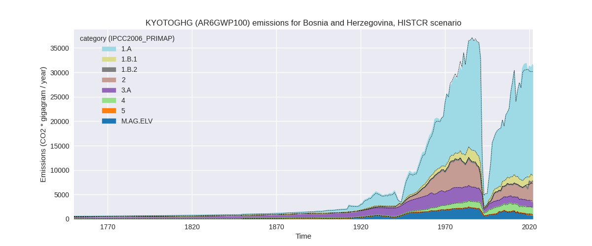
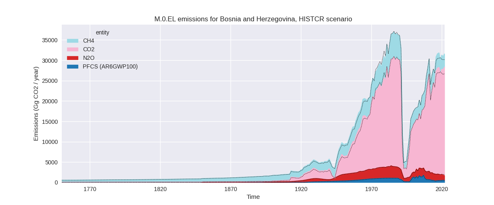
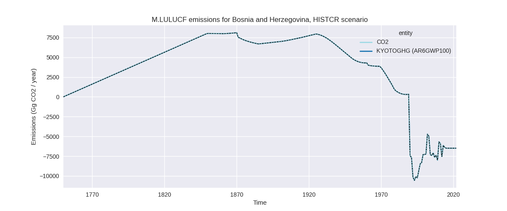
The following figures show the aggregate national total emissions excluding LULUCF AR6GWP100 for the third party priority scenario. The dotted linesshow the v2.5_final data.
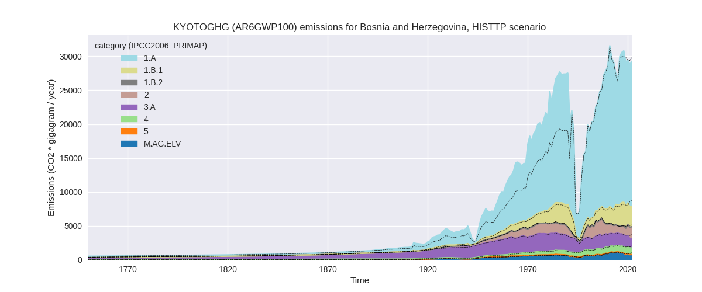
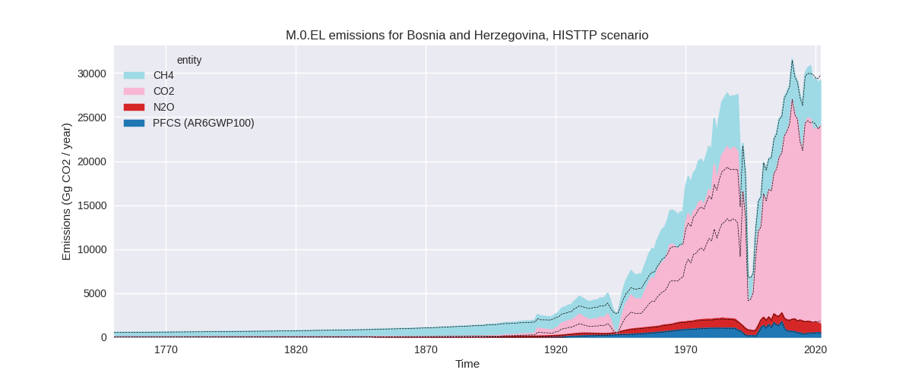
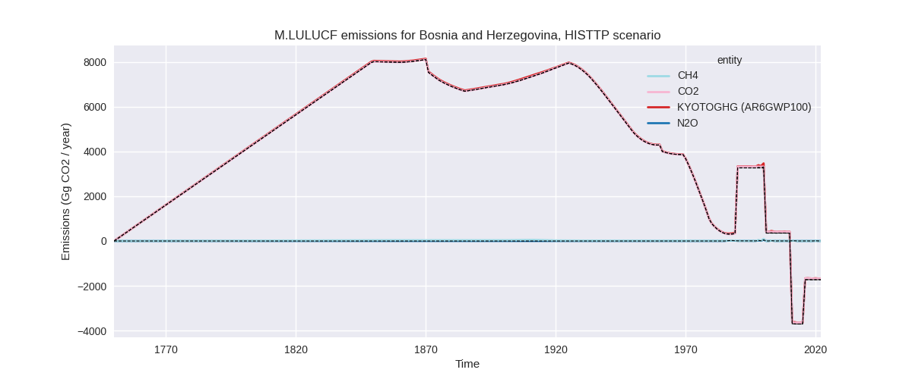
Overview over changes
In the country reported priority scenario we have the following changes for aggregate Kyoto GHG and national total emissions excluding LULUCF (M.0.EL):
- Emissions in 2022 have changed by 4.7%% (1419.47 Gg CO2 / year)
- Emissions in 1990-2022 have changed by 0.4%% (95.35 Gg CO2 / year)
In the third party priority scenario we have the following changes for aggregate Kyoto GHG and national total emissions excluding LULUCF (M.0.EL):
- Emissions in 2022 have changed by -2.1%% (-616.17 Gg CO2 / year)
- Emissions in 1990-2022 have changed by 2.1%% (473.30 Gg CO2 / year)
Most important changes per scenario and time frame
In the country reported priority scenario the following sector-gas combinations have the highest absolute impact on national total KyotoGHG (AR6GWP100) emissions in 2022 (top 5):
- 1: 1.A, CO2 with 1221.17 Gg CO2 / year (5.8%)
- 2: 2, CO2 with 869.37 Gg CO2 / year (28.6%)
- 3: 1.B.1, CO2 with -262.33 Gg CO2 / year (-37.7%)
- 4: 3.A, CH4 with -202.60 Gg CO2 / year (-18.8%)
- 5: M.AG.ELV, N2O with -129.19 Gg CO2 / year (-15.3%)
In the country reported priority scenario the following sector-gas combinations have the highest absolute impact on national total KyotoGHG (AR6GWP100) emissions in 1990-2022 (top 5):
- 1: 1.A, CO2 with 234.93 Gg CO2 / year (1.6%)
- 2: 1.B.1, CO2 with -49.14 Gg CO2 / year (-16.2%)
- 3: 2, CO2 with -37.60 Gg CO2 / year (-2.5%)
- 4: 1.B.2, CH4 with -20.94 Gg CO2 / year (-70.3%)
- 5: M.AG.ELV, N2O with -16.75 Gg CO2 / year (-1.5%)
In the third party priority scenario the following sector-gas combinations have the highest absolute impact on national total KyotoGHG (AR6GWP100) emissions in 2022 (top 5):
- 1: 2, CO2 with 362.39 Gg CO2 / year (40.7%)
- 2: 1.B.1, CH4 with -342.53 Gg CO2 / year (-11.9%)
- 3: M.AG.ELV, N2O with -317.76 Gg CO2 / year (-32.0%)
- 4: 3.A, CH4 with -279.21 Gg CO2 / year (-18.0%)
- 5: 1.A, CO2 with 276.65 Gg CO2 / year (1.3%)
In the third party priority scenario the following sector-gas combinations have the highest absolute impact on national total KyotoGHG (AR6GWP100) emissions in 1990-2022 (top 5):
- 1: 1.A, CO2 with 401.23 Gg CO2 / year (2.6%)
- 2: 1.B.1, CH4 with 213.56 Gg CO2 / year (13.3%)
- 3: 1.B.1, CO2 with -49.14 Gg CO2 / year (-16.2%)
- 4: 2, CO2 with -40.24 Gg CO2 / year (-6.4%)
- 5: 1.B.2, CH4 with -20.94 Gg CO2 / year (-70.3%)
Notes on data changes
No country specific notes present for this changelog.
Changes by sector and gas
For each scenario and time frame the changes are displayed for all individual sectors and all individual gases. In the sector plot we use aggregate Kyoto GHGs in AR6GWP100. In the gas plot we usenational total emissions without LULUCF. ## country reported scenario
2022
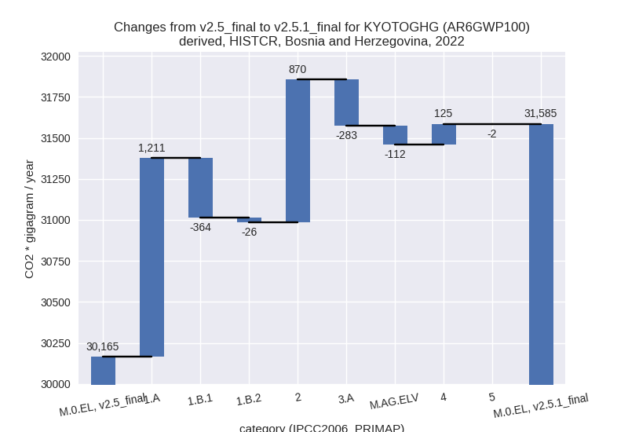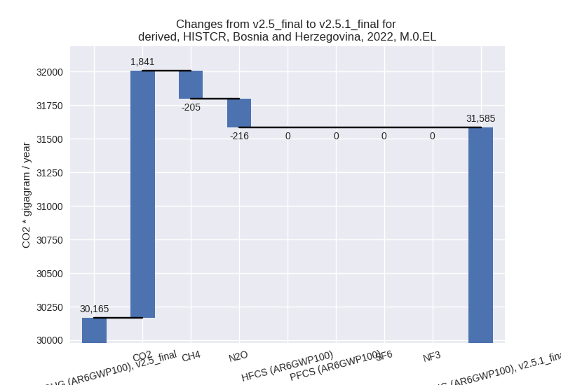
1990-2022
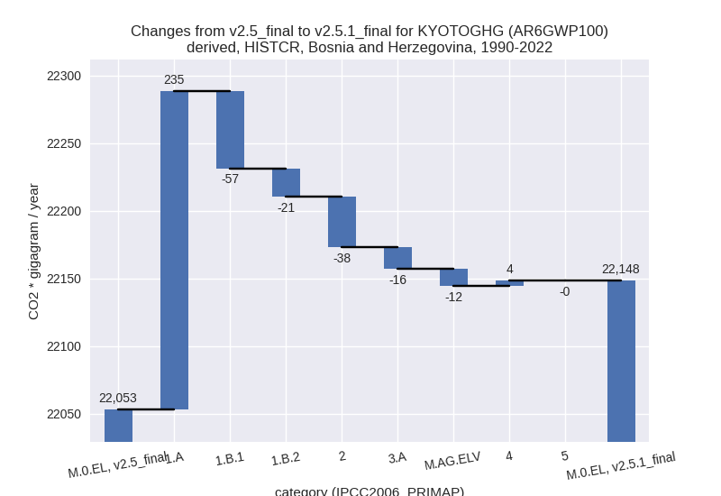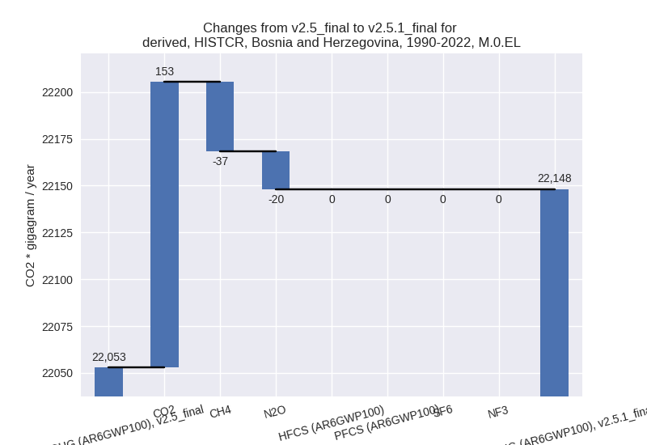
third party scenario
2022
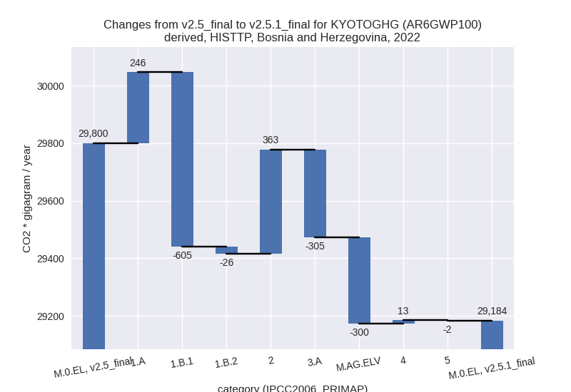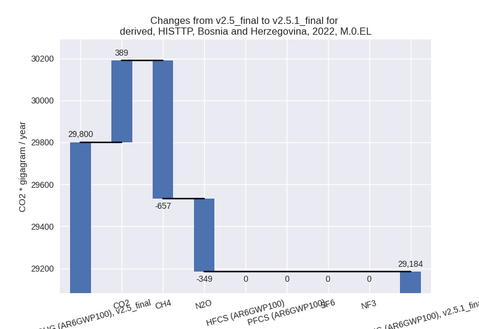
1990-2022
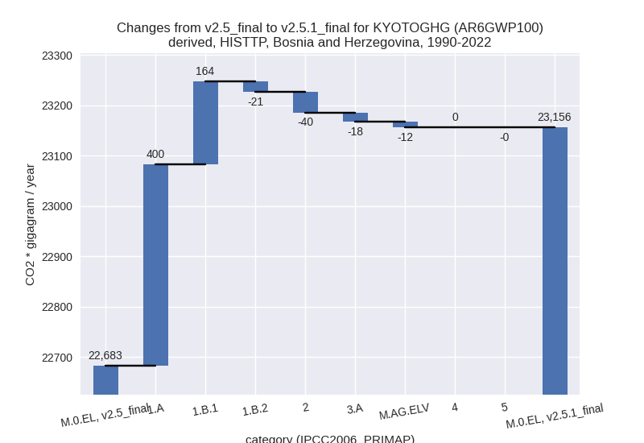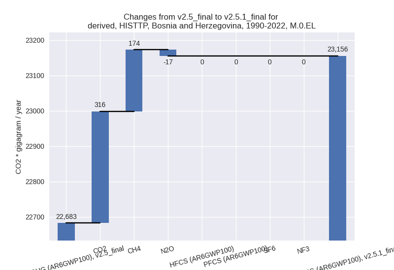
Detailed changes for the scenarios:
country reported scenario (HISTCR):
Most important changes per time frame
For 2022 the following sector-gas combinations have the highest absolute impact on national total KyotoGHG (AR6GWP100) emissions in 2022 (top 5):
- 1: 1.A, CO2 with 1221.17 Gg CO2 / year (5.8%)
- 2: 2, CO2 with 869.37 Gg CO2 / year (28.6%)
- 3: 1.B.1, CO2 with -262.33 Gg CO2 / year (-37.7%)
- 4: 3.A, CH4 with -202.60 Gg CO2 / year (-18.8%)
- 5: M.AG.ELV, N2O with -129.19 Gg CO2 / year (-15.3%)
For 1990-2022 the following sector-gas combinations have the highest absolute impact on national total KyotoGHG (AR6GWP100) emissions in 1990-2022 (top 5):
- 1: 1.A, CO2 with 234.93 Gg CO2 / year (1.6%)
- 2: 1.B.1, CO2 with -49.14 Gg CO2 / year (-16.2%)
- 3: 2, CO2 with -37.60 Gg CO2 / year (-2.5%)
- 4: 1.B.2, CH4 with -20.94 Gg CO2 / year (-70.3%)
- 5: M.AG.ELV, N2O with -16.75 Gg CO2 / year (-1.5%)
Changes in the main sectors for aggregate KyotoGHG (AR6GWP100) are
- 1: Total sectoral emissions in 2022 are 23790.06 Gg
CO2 / year which is 75.3% of M.0.EL emissions. 2022 Emissions have
changed by 3.6% (820.87 Gg CO2 /
year). 1990-2022 Emissions have changed by 1.0% (157.58 Gg CO2 / year). For 2022 the
changes per gas
are:

The changes come from the following subsectors:- 1.A: Total sectoral emissions in 2022 are 22528.04
Gg CO2 / year which is 94.7% of category 1 emissions. 2022 Emissions
have changed by 5.7% (1211.22 Gg CO2
/ year). 1990-2022 Emissions have changed by 1.6% (235.36 Gg CO2 / year). For 2022 the
changes per gas
are:
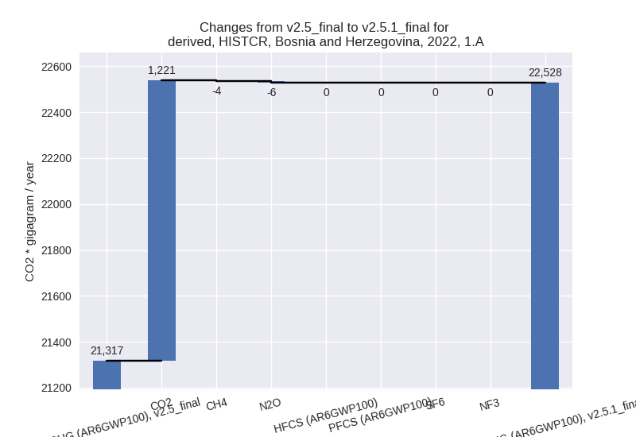
There is no subsector information available in PRIMAP-hist. - 1.B.1: Total sectoral emissions in 2022 are 1255.25
Gg CO2 / year which is 5.3% of category 1 emissions. 2022 Emissions have
changed by -22.5% (-364.29 Gg CO2 /
year). 1990-2022 Emissions have changed by -4.9% (-56.84 Gg CO2 / year). For 2022 the
changes per gas
are:
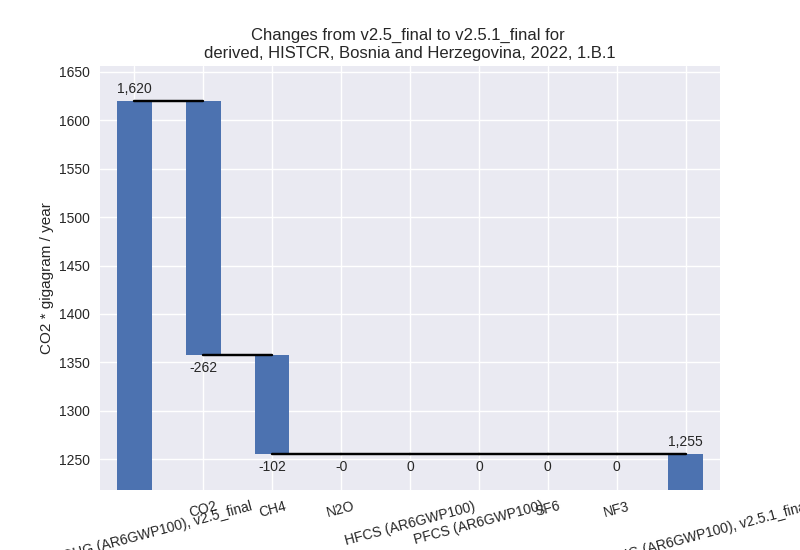
For 1990-2022 the changes per gas are:
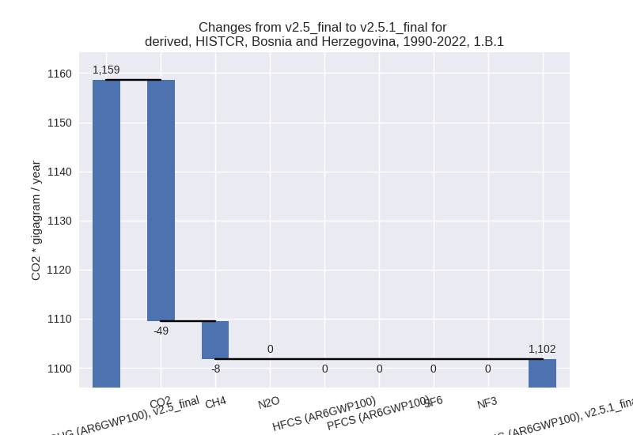
There is no subsector information available in PRIMAP-hist. - 1.B.2: Total sectoral emissions in 2022 are 6.76 Gg
CO2 / year which is 0.0% of category 1 emissions. 2022 Emissions have
changed by -79.4% (-26.07 Gg CO2 /
year). 1990-2022 Emissions have changed by -70.3% (-20.94 Gg CO2 / year). For 2022
the changes per gas
are:
For 1990-2022 the changes per gas are:
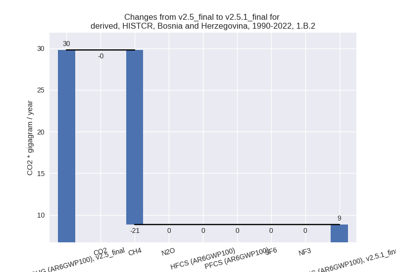
There is no subsector information available in PRIMAP-hist.
- 1.A: Total sectoral emissions in 2022 are 22528.04
Gg CO2 / year which is 94.7% of category 1 emissions. 2022 Emissions
have changed by 5.7% (1211.22 Gg CO2
/ year). 1990-2022 Emissions have changed by 1.6% (235.36 Gg CO2 / year). For 2022 the
changes per gas
are:
- 2: Total sectoral emissions in 2022 are 4418.88 Gg
CO2 / year which is 14.0% of M.0.EL emissions. 2022 Emissions have
changed by 24.5% (869.63 Gg CO2 /
year). 1990-2022 Emissions have changed by -1.7% (-37.59 Gg CO2 / year). For 2022 the
changes per gas
are:
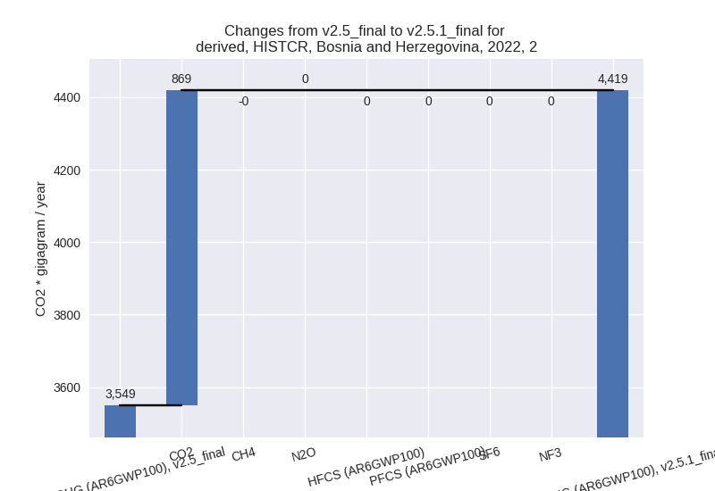 - M.AG: Total sectoral emissions in 2022 are 1829.77
Gg CO2 / year which is 5.8% of M.0.EL emissions. 2022 Emissions have
changed by -17.7% (-394.48 Gg CO2 /
year). 1990-2022 Emissions have changed by -1.1% (-28.39 Gg CO2 / year). For 2022 the
changes per gas
are:
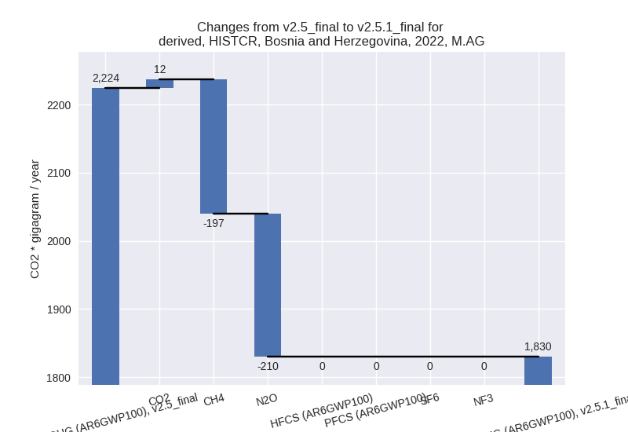
The changes come from the following subsectors:- 3.A: Total sectoral emissions in 2022 are 1066.82
Gg CO2 / year which is 58.3% of category M.AG emissions. 2022 Emissions
have changed by -21.0% (-282.94 Gg
CO2 / year). 1990-2022 Emissions have changed by -1.1% (-16.13 Gg CO2 / year). For 2022 the
changes per gas
are:
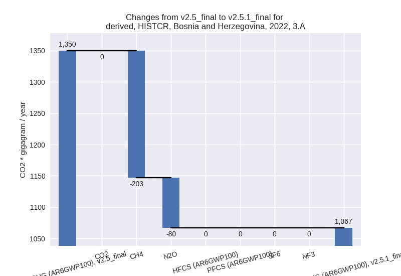
There is no subsector information available in PRIMAP-hist. - M.AG.ELV: Total sectoral emissions in 2022 are
762.95 Gg CO2 / year which is 41.7% of category M.AG emissions. 2022
Emissions have changed by -12.8%
(-111.54 Gg CO2 / year). 1990-2022 Emissions have changed by -1.0% (-12.25 Gg CO2 / year). For 2022 the
changes per gas
are:
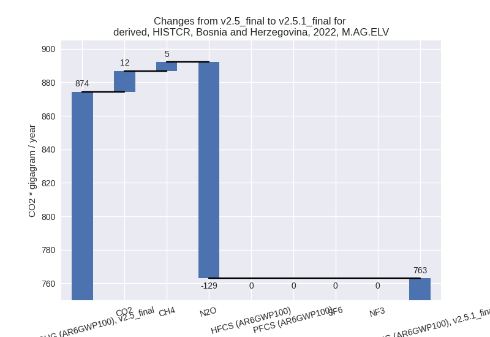
There is no subsector information available in PRIMAP-hist.
- 3.A: Total sectoral emissions in 2022 are 1066.82
Gg CO2 / year which is 58.3% of category M.AG emissions. 2022 Emissions
have changed by -21.0% (-282.94 Gg
CO2 / year). 1990-2022 Emissions have changed by -1.1% (-16.13 Gg CO2 / year). For 2022 the
changes per gas
are:
- 4: Total sectoral emissions in 2022 are 1483.06 Gg
CO2 / year which is 4.7% of M.0.EL emissions. 2022 Emissions have
changed by 9.2% (125.12 Gg CO2 /
year). 1990-2022 Emissions have changed by 0.3% (3.79 Gg CO2 / year). For 2022 the
changes per gas
are:
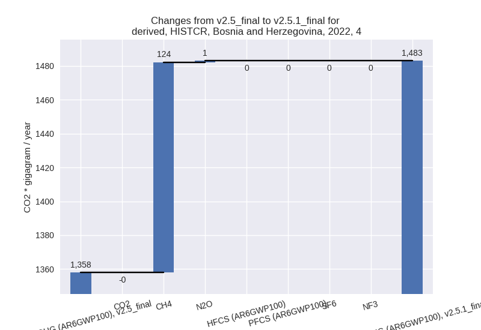 - 5: Total sectoral emissions in 2022 are 63.19 Gg
CO2 / year which is 0.2% of M.0.EL emissions. 2022 Emissions have
changed by -2.6% (-1.67 Gg CO2 /
year). 1990-2022 Emissions have changed by -0.1% (-0.05 Gg CO2 / year). For 2022 the
changes per gas
are:
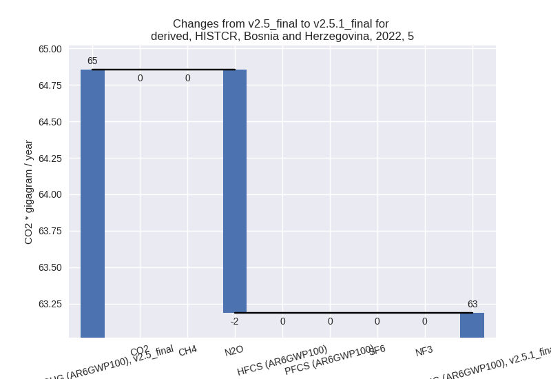
third party scenario (HISTTP):
Most important changes per time frame
For 2022 the following sector-gas combinations have the highest absolute impact on national total KyotoGHG (AR6GWP100) emissions in 2022 (top 5):
- 1: 2, CO2 with 362.39 Gg CO2 / year (40.7%)
- 2: 1.B.1, CH4 with -342.53 Gg CO2 / year (-11.9%)
- 3: M.AG.ELV, N2O with -317.76 Gg CO2 / year (-32.0%)
- 4: 3.A, CH4 with -279.21 Gg CO2 / year (-18.0%)
- 5: 1.A, CO2 with 276.65 Gg CO2 / year (1.3%)
For 1990-2022 the following sector-gas combinations have the highest absolute impact on national total KyotoGHG (AR6GWP100) emissions in 1990-2022 (top 5):
- 1: 1.A, CO2 with 401.23 Gg CO2 / year (2.6%)
- 2: 1.B.1, CH4 with 213.56 Gg CO2 / year (13.3%)
- 3: 1.B.1, CO2 with -49.14 Gg CO2 / year (-16.2%)
- 4: 2, CO2 with -40.24 Gg CO2 / year (-6.4%)
- 5: 1.B.2, CH4 with -20.94 Gg CO2 / year (-70.3%)
Changes in the main sectors for aggregate KyotoGHG (AR6GWP100) are
- 1: Total sectoral emissions in 2022 are 24301.70 Gg
CO2 / year which is 83.3% of M.0.EL emissions. 2022 Emissions have
changed by -1.6% (-384.89 Gg CO2 /
year). 1990-2022 Emissions have changed by 3.0% (543.25 Gg CO2 / year). For 1990-2022
the changes per gas
are:
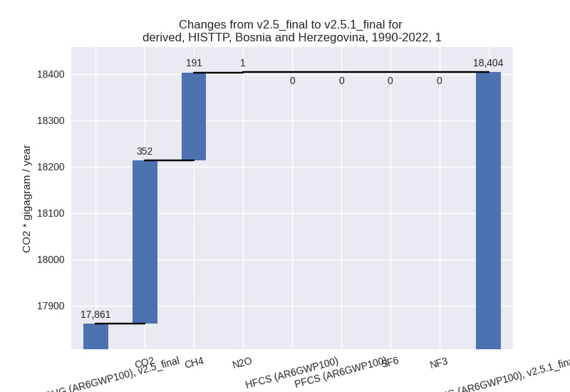
The changes come from the following subsectors:- 1.A: Total sectoral emissions in 2022 are 21331.31
Gg CO2 / year which is 87.8% of category 1 emissions. 2022 Emissions
have changed by 1.2% (246.06 Gg CO2
/ year). 1990-2022 Emissions have changed by 2.5% (399.78 Gg CO2 / year). For 1990-2022
the changes per gas
are:
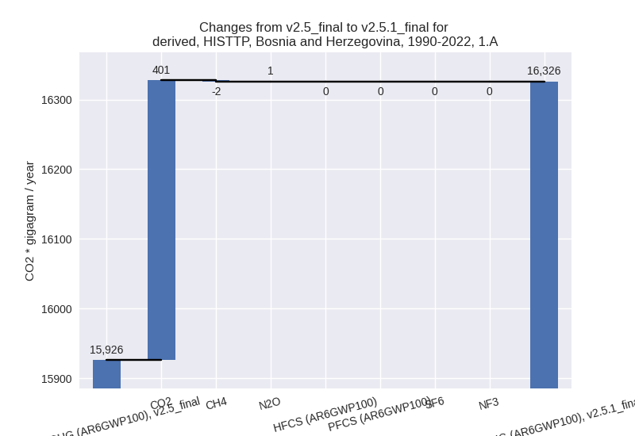
There is no subsector information available in PRIMAP-hist. - 1.B.1: Total sectoral emissions in 2022 are 2963.63
Gg CO2 / year which is 12.2% of category 1 emissions. 2022 Emissions
have changed by -17.0% (-604.88 Gg
CO2 / year). 1990-2022 Emissions have changed by 8.6% (164.42 Gg CO2 / year). For 2022 the
changes per gas
are:
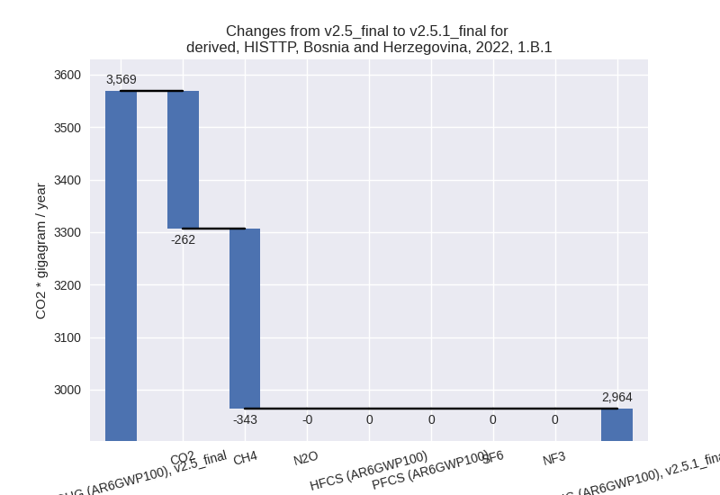
For 1990-2022 the changes per gas are:
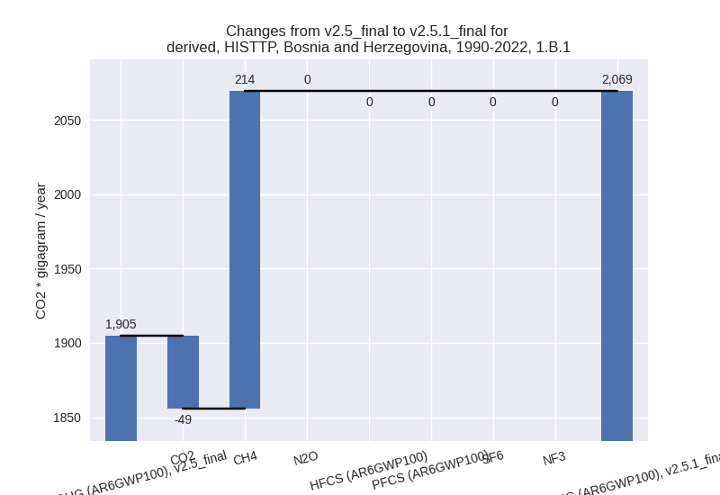
There is no subsector information available in PRIMAP-hist. - 1.B.2: Total sectoral emissions in 2022 are 6.76 Gg
CO2 / year which is 0.0% of category 1 emissions. 2022 Emissions have
changed by -79.4% (-26.07 Gg CO2 /
year). 1990-2022 Emissions have changed by -70.3% (-20.94 Gg CO2 / year). For 2022
the changes per gas
are:
For 1990-2022 the changes per gas are:
There is no subsector information available in PRIMAP-hist.
- 1.A: Total sectoral emissions in 2022 are 21331.31
Gg CO2 / year which is 87.8% of category 1 emissions. 2022 Emissions
have changed by 1.2% (246.06 Gg CO2
/ year). 1990-2022 Emissions have changed by 2.5% (399.78 Gg CO2 / year). For 1990-2022
the changes per gas
are:
- 2: Total sectoral emissions in 2022 are 1759.84 Gg
CO2 / year which is 6.0% of M.0.EL emissions. 2022 Emissions have
changed by 26.0% (362.64 Gg CO2 /
year). 1990-2022 Emissions have changed by -3.0% (-40.23 Gg CO2 / year). For 2022 the
changes per gas
are:
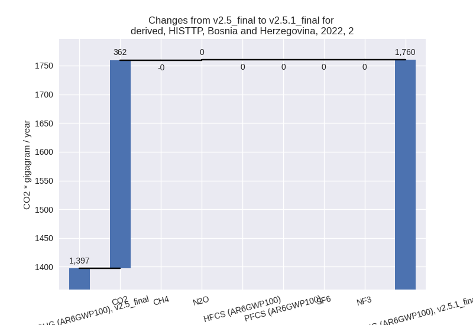
For 1990-2022 the changes per gas are:
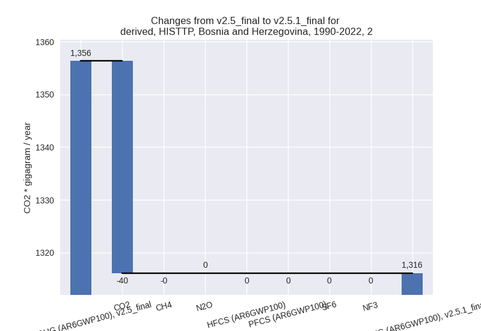 - M.AG: Total sectoral emissions in 2022 are 2080.58
Gg CO2 / year which is 7.1% of M.0.EL emissions. 2022 Emissions have
changed by -22.5% (-605.16 Gg CO2 /
year). 1990-2022 Emissions have changed by -1.2% (-30.07 Gg CO2 / year). For 2022 the
changes per gas
are:
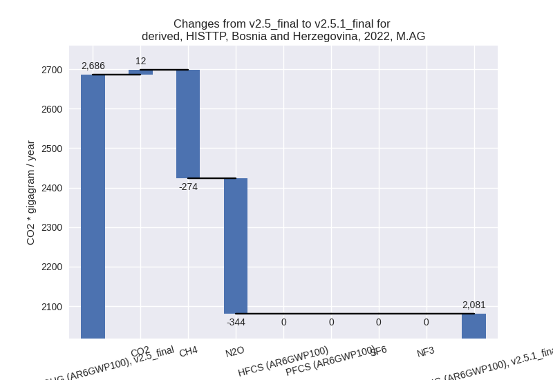
The changes come from the following subsectors:- 3.A: Total sectoral emissions in 2022 are 1357.81
Gg CO2 / year which is 65.3% of category M.AG emissions. 2022 Emissions
have changed by -18.3% (-305.06 Gg
CO2 / year). 1990-2022 Emissions have changed by -1.0% (-18.47 Gg CO2 / year). For 2022 the
changes per gas
are:
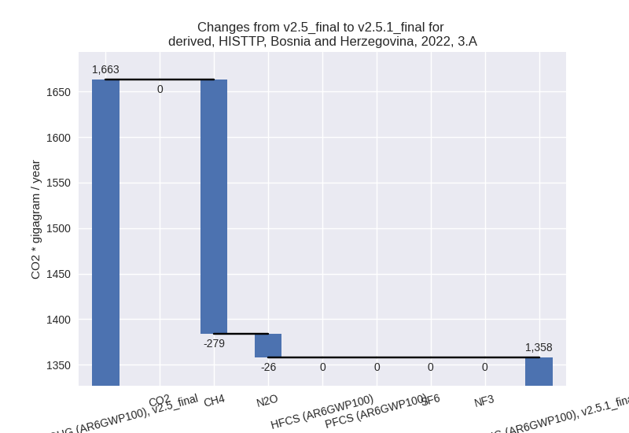
There is no subsector information available in PRIMAP-hist. - M.AG.ELV: Total sectoral emissions in 2022 are
722.77 Gg CO2 / year which is 34.7% of category M.AG emissions. 2022
Emissions have changed by -29.3%
(-300.11 Gg CO2 / year). 1990-2022 Emissions have changed by -1.6% (-11.60 Gg CO2 / year). For 2022 the
changes per gas
are:
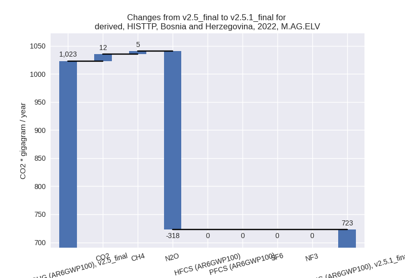
There is no subsector information available in PRIMAP-hist.
- 3.A: Total sectoral emissions in 2022 are 1357.81
Gg CO2 / year which is 65.3% of category M.AG emissions. 2022 Emissions
have changed by -18.3% (-305.06 Gg
CO2 / year). 1990-2022 Emissions have changed by -1.0% (-18.47 Gg CO2 / year). For 2022 the
changes per gas
are:
- 4: Total sectoral emissions in 2022 are 978.82 Gg CO2 / year which is 3.4% of M.0.EL emissions. 2022 Emissions have changed by 1.3% (12.90 Gg CO2 / year). 1990-2022 Emissions have changed by 0.0% (0.39 Gg CO2 / year).
- 5: Total sectoral emissions in 2022 are 63.19 Gg
CO2 / year which is 0.2% of M.0.EL emissions. 2022 Emissions have
changed by -2.6% (-1.67 Gg CO2 /
year). 1990-2022 Emissions have changed by -0.1% (-0.05 Gg CO2 / year). For 2022 the
changes per gas
are: